Key to superfamilies of Acalyptratae
1.
- Wing well-developed, longer than thorax.
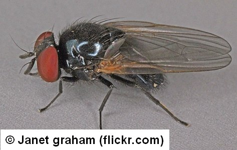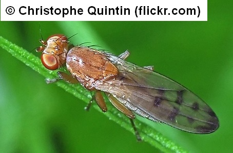
2
- Wing absent or greatly reduced (usually shorter than thorax).
 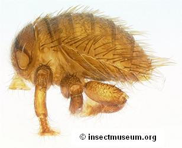
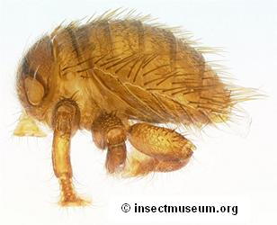
53
- Proboscis very long (much longer than head), sharply bent at base (or at base and middle). Pedicel usually longer than first flagellomere. Crossvein Sc-R present, and/or cell cup distinctly longer than cell bm. Vein M curved upward approaching or joining R4+5 (sometimes cell r4+5 even petiolate). Ptilinal fissure short.
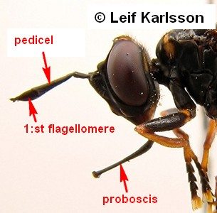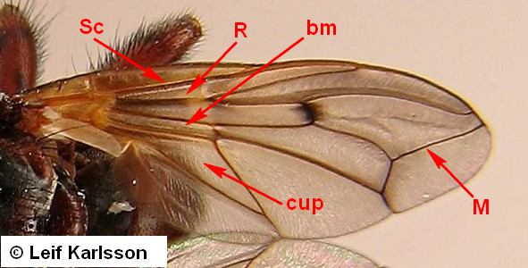
Conopoidea
Conopidae
- Proboscis usually shorter and stout, but if longer than head, doubly geniculate and pedicel shorter than first flagellomere. If pedicel longer than first flagellomere, no Sc-R crossvein and cell cup shorter than or as long (Pyrgotidae) as cell bm.
3
- Ocelli and ocellar triangle absent. Pedicel long, wing patterned. Preabdomen cylindrical (i.e., not depressed). Postvertical bristles absent or very smal.


Tephritoidea
Pyrgotidae
- Ocelli present. Combination of other characteristics different.
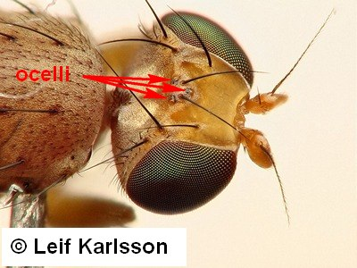
4
- Arista indiscernible (a minute spine at the apicodorsal angle of the very large first flagellomere. Eyes very large and pubescent. ScutelIum large, convex, no scutellars but scutellum evenly setose.
 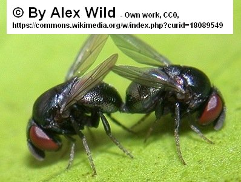
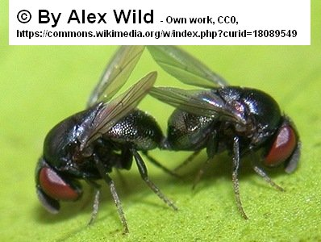
Lonchaeoidea
Cryptochetidae
- Arista present. If exceptionally reduced (e.g., in the subgenus Asteia (Subanarista), then also anal vein and anal cell absent.
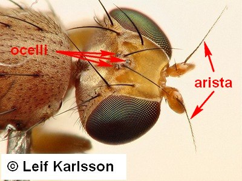
5
- Subcostal vein abruptly bent forward at nearly a right angle, weakened beyond that bend and ending at subcostal break; dorsal side of vein R1 with setulae. Pedicel with a dorsal "cleft". Orbitalia conspicuous, usually also with medially curved lower fronto-orbitals. In female tergite and sternite 7 form a closed tubuliform pseudo-ovipositor. In males the asymmetric postabdomen comparatively small and hidden in the 5th segment; aedeagus long, enrolled spirally. Wing usually patterned by coloured bands or spots, cell cup usually with an acute extension.


Tephritoidea
Tephritidae
- Subcostal vein less abruptly bent forward (if abruptly bent: Psilidae, no dorsal setulae on vein R1), or reduced, incomplete or fused with R1. The combination of other characteristics not as above.
6
- Head posteriorly strongly concave, ptilinal fissure short. Prothorax with very broad precoxal bridge (a sclerite connecting prosternum to propleuron on both sides). Pedicel with deep dorsal incision. Arista bipectinate. No aluia; alular area of wing reduced: no border between the narrow wing base and wing plateblade. Anal vein (A1+CuA2) extremely short, much shorter than CuA2. Postverticals and ocellars absent, but fronto-orbital setae large. Postscutellum extremely large, bulging.
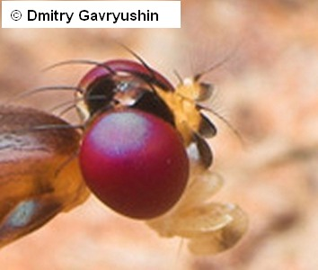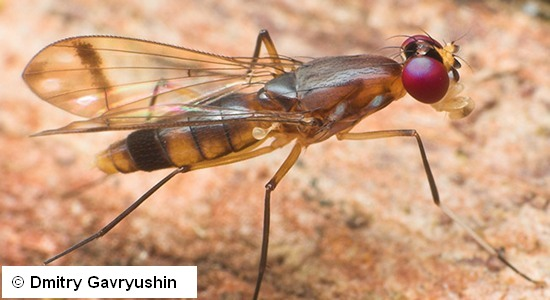
Diopsoidea
Nothybidae
- Head posterally not concave, but if so, ptilinal fissure normal and precoxal bridge absent. The combination of the other characteristics is also different from those above.

7
- Subcostal vein complete, separate from vein R1 along its whole length and ending in costa.

8
- Subcostal vein incomplete, either indistinct distally or fused with vein R1 distally (proximally to costa), or joined to R1 by sclerotization of the intervening area. Families with strongly reduced wing venation key out here.
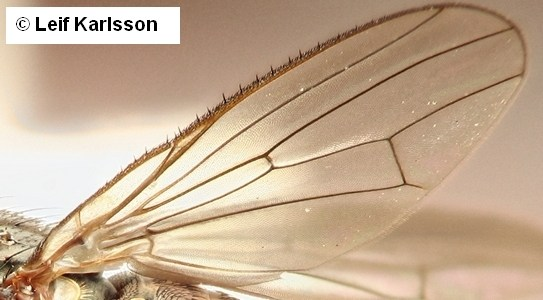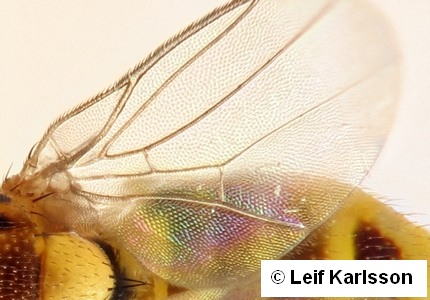
31
- Eyes and antennae widely displaced laterally (at least so in the Palaearctic genera), situated on lateral processes of the head in both sexes. Scutellum with two elongate processes, replacing or apically bearing the scutellar setae. Cell bm broadly confluent with cell dm.
 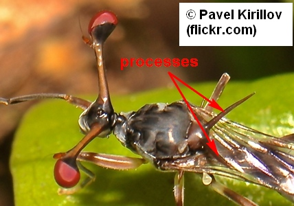
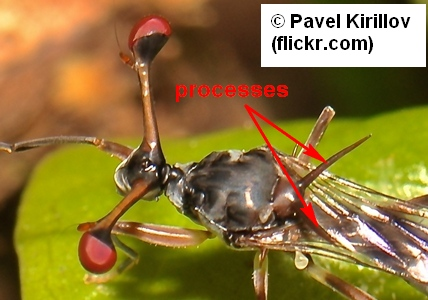
Diopsoidea
Diopsidae
- Eyes not displaced laterally, but if situated on broad or long stalks, antennae normal in positiull (i.e., not displaced laterally). Scutellum without elongate processes and usually more than 1 pair of scutellars. In cases of confusion, cell bm closed and separate from cell dm.
9
- Slender-bodied flies with long slender legs. Veins R4+5 and M meeting or strongly converging at wing margin.


10
- Usually stouter flies with shorter and more robust legs. Veins R4+5 and M usually subparallel or divergent at wing margin.
 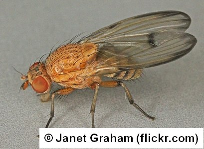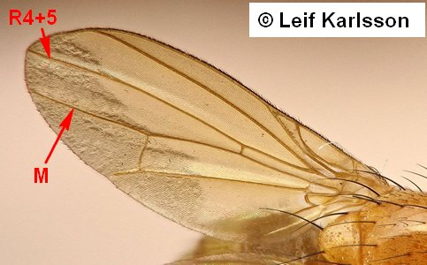
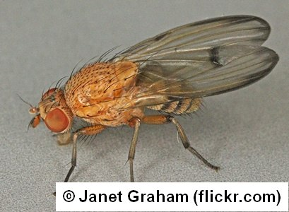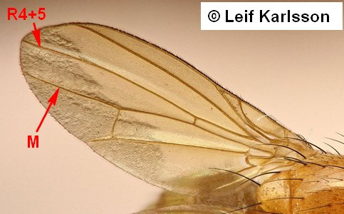
11
- Eyes very large, distinctly higher than long, and closer in male than in female. R1 setose dorsally. Katepisternum evenly pilose but no outstanding katepisternal setae.

Diopsoidea
Tanypezidae
- Eyes smaller not much higher than long, frons as broad in male as in female. R1 not setose. Katepisternum never evenly pilose, but always with 1 or many outstanding setae or hairs.
Nerioidea
- Pedicel with a triangular extension laterally near middle. Frons with 2 to 5 pairs of strong fronto-orbitals; postvertical (postocellar) setae mostly present, divergent. Gena with a strong vibrissa on each side. Arista subapical. Face (praefrons) sagittally largely desclerotized and continuous with lining of subcranial cavity below.
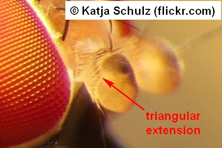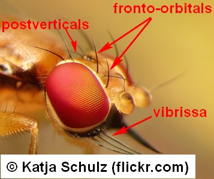
Opomyzoidea
Clusiidae
- Pedicel not triangularly shaped at lateral margin. Face evenly sclerotized with well defined ventral margin, or vibrissae absent. Other characteristics variable.
12
- Costa without a subcostal break, at most weakened or interrupted near crossvein Hu.
13
- Costa with at least a subcostal break.
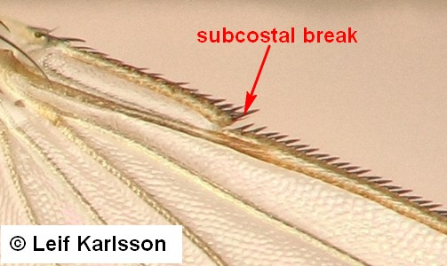
20
- Costa with a complete break just beyond Hu, vein Sc short, i.e., joining costa far before insertion of R1. All tibiae without a dorsal preapical bristle. Postvertical (postocellar) setae divergent, frons with three pairs of evenly spaced reclinate fronto-orbitals and with weak interfrontals. Eyes distinctly pubescent.
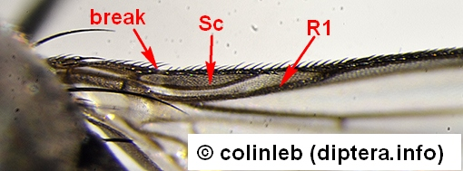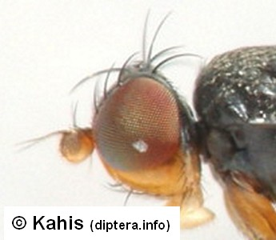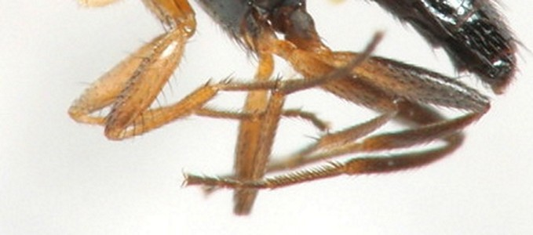
Carnoidea
Acartophthalmidae
- Costa without any break, if weakened near (usually proximal to) insertion of crossvein Hu, then vein Sc normal, i.e., joining costa not far before insertion of R1.
14
- Posterior thoracic spiracle with one or more fine bristles on lower margin. Genae with a row of bristles on each side, vibrissae present but usually not well differentiated from this row. Palpus mostly vestigial (not so in Orygma). Head subspherical, abdomen rather slender. Usually dark, ant-like flies.


Sciomyzoidea
Sepsidae
- Lower margin of posterior thoracic spiracle without fine bristle. Combination of other characteristics not as above.
15
- Hind femora enlarged and swollen, with a double row of ventral spines. Ptilinal fissure M-shaped. Postvertical (postocellar) and ocellar setae absent. Abdominal segments elongate, except reduced male 6th and 7th segments.
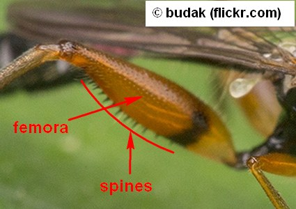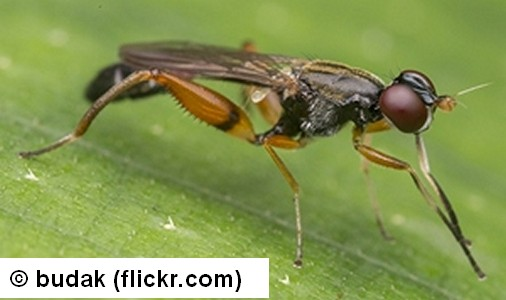
Diopsoidea
Megamerinidae
- Hind femora usually not enlarged and spinose, Ptilinal fissure not M-shaped.
16
- Scutellum greatly enlarged, much longer than scutum. Each tibia with a dorsal preapical bristle.
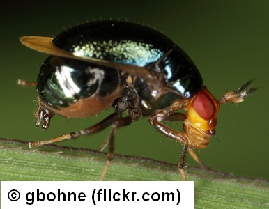
Lauxanioidea
Celyphidae
- Scutellurn normal, or if enlarged (some tropical Lauxaniidae and Chloropidae), not longer than scutum.
17
- Some or all tibiae with a discernible dorsal preapical bristle.
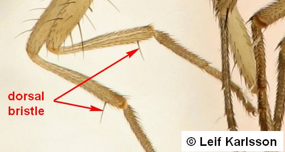
18
- All tibiae without a dorsal preapical bristle.
19
- Vein A1 abbreviated, ending well before wing margin. Postvertical (posto- cellar) setae distinctly convergent, or even crossed. Body never extensively hairy. Vein A2 mostly discernible on wing.
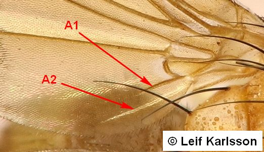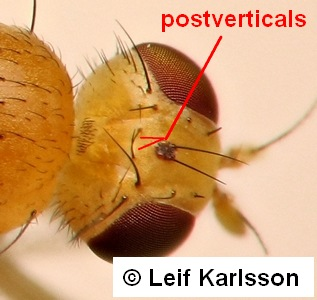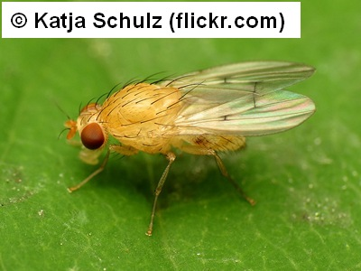
Lauxanioidea
Lauxaniidae
- Vein A1 discernible approximately to margin of wing. Postvertical (postocellar) setae parallel or usually distinctly divergent. In cases of confusion (if e.g., postverticals slightly convergent), ro- bust hairy flies key out here.
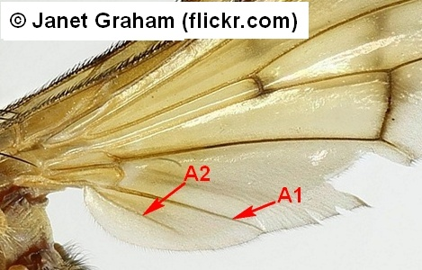
Sciomyzoidea
- Dorsal (upper) side of vein R1 without small setae, at most with microtrichia. Vein CuA2 never indented and so cell cup not acute. Wings at most infuscated in subcostal and costal cells.
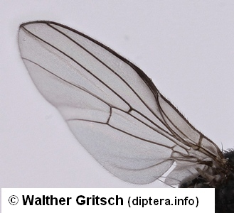
Lauxanioidea
- Dorsal (upper) side of vein R1 provided with small setae or vein CuA2 indented so that cell cup forms an acute angle (Figs 3.12.1315). Wings frequently marked.
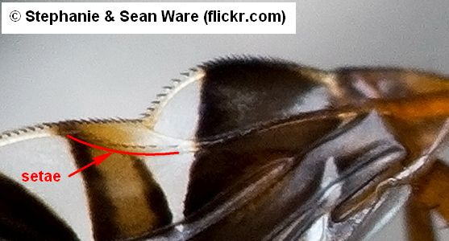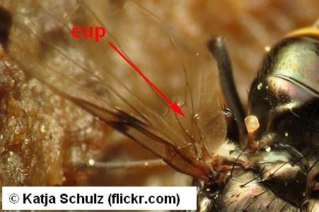
Tephritoidea
- Subcranial cavity very large. Genae with 1 to several strong upcurved bristles just below eye. Frons unusually broad, with 3 to 5 lateroclinate fronto-orbital setae. Vein A1 short, apex frequently faded. Male postabdomen symmetrical, female with hook-shaped cerci.
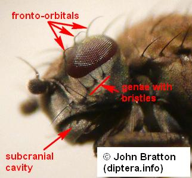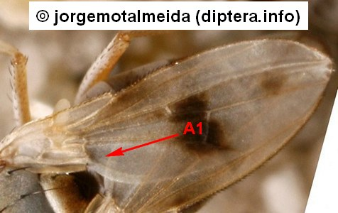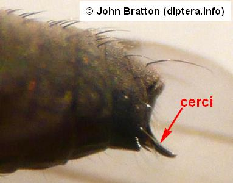
Carnoidea
Canacidae, part
- Subcranial cavity not unusually large. Genae without strong upcurved bristles immediately below eye. Frons not unusually broad, with fewer than 3 lateroclinate fronto-orbital setae.
21
- Dorsal (upper) side of vein R1 provided with small setae, or vein CuA2 indented so that cell cup produced into an acute angle.
Tephritoidea
- Dorsal (upper) side of vein R1 not provided with small setae, at most covered with microtrichia. Vein CuA2 not indented, i.e., cell cup not produced into an acute angle. In some families anal cell very small or even open and A1 very short.
22
- At least one pair of incurved lower fronto-orbital setae present.
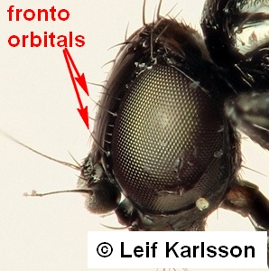
23
- Lower fronto-orbital setae not incurved, or absent.
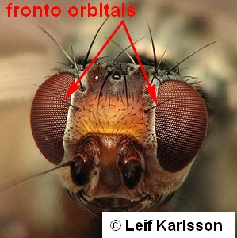
25
- Costa with subcostal break only. One to several pairs of medioclinate lower fronto-orbital setae present.
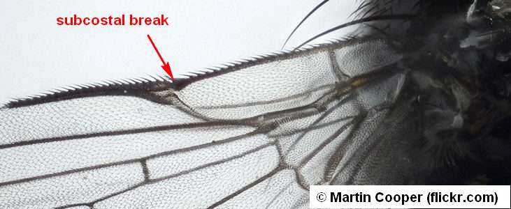
24
- Costa also with a distinct humeral break distal to crossvein Hu. Two pairs of medioclinate lower fronto-orbitals.
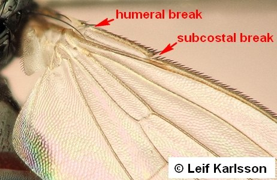
Carnoidea
- Postverticals (postocellars) mostly convergent. Very small or minute, pale or yellow flies, even bristles and hairs yellowish. Female postabdominal segments form a short tubular pseudovipositor.
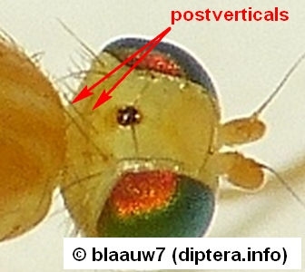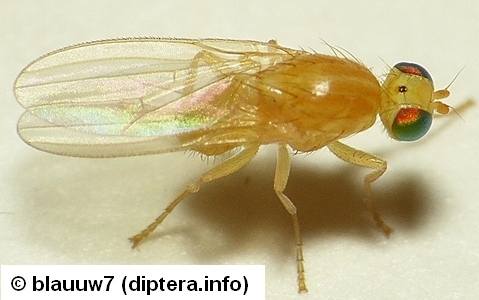
Sphaeroceroidea
Chyromyidae, part
- Postverticals (postocellars) always divergent. Body seldom pale; if so, bristles and hairs dark. Female abdominal segments 7-9 modified: segment 7 visible externally as a non-retractile ovi scape, etc..
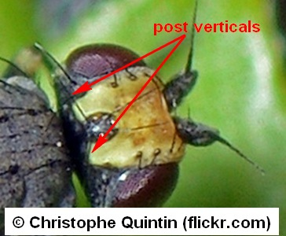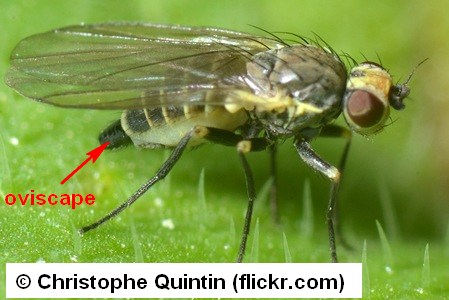
Opomyzoidea
Agromyzidae, part
- Vibrissae absent, but subvibrissal bristles sometimes vibrissa-like. All tibiae without a dorsal preapical bristle.
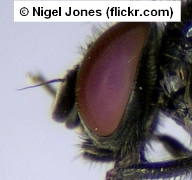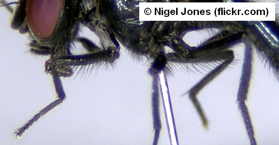
26
- Vibrissae present, although sometimes weak. Tibiae with or without a dorsal preapical bristle.
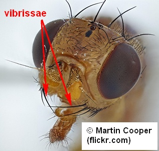
29
- Only 1 but very long upper fronto-orbital seta present. Postverticals (postocellars) divergent, sometimes weak. Somewhat larger, dark, or at least not yellow flies; wing may be patterned. Females with lance-like pseudo-ovipositor).
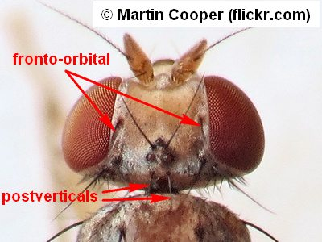
27
- Fronto-orbitals - if not absent - rather weak (Figs 3.42.2-3). Postverticals (postocellars) mostly convergent, or indiscernibl.
28
- Cell c normal, costa with costagial, humeral and subcostal weakenings or breaks. Wings frequently patterned. Anepisternum and katepisternum each with one bristle and numer- ous setulae. Halteres usually whitish.
 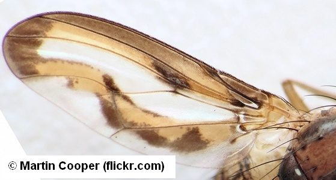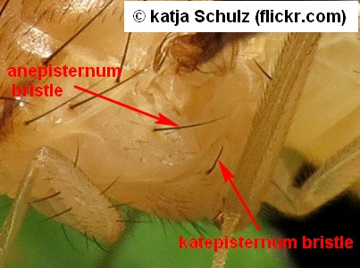
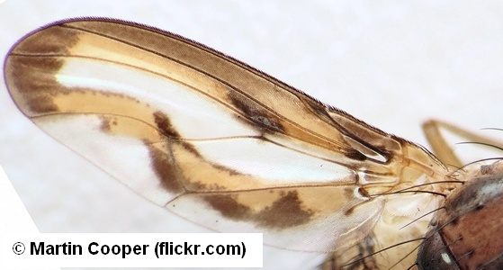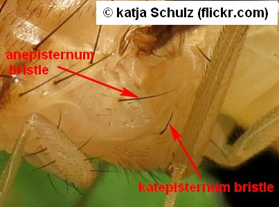
Tephritoidea
Pallopteridae
- Cell c large and wide, costa with subcostal break only (sometimes weak). Wings clear. Anepisternum with numerous strong posterior marginal and frequently also with upper anterior bristles. Halteres blackened. Bristly, dark or metallic flies.
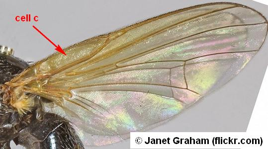
Lonchaeoidea
Lonchaeidae
- Strongly exclinate fronto-orbital bristles present. Four (1+3) pairs dorsocentral bristles. Frontal vitta with conspicuous bristles or setulae along margins or over much of surface. Vein A1 fading out on apical third or more, never traceable to wing margin; anal cell closed, but if only 1 ors, anal vein very much reduced. Postverticals reduced, sometimes indiscernible. Subvibrissal bristles sometimes vibrissa-like in some Tethina species.
Carnoidea
Canacidae
Tethininae, part
- Exclinate fronto-orbital bristles absent. One pair dorsocentral bristles. Frontal vitta (mesofrons) with conspicuous pair of proclinate interfrontal bristles. Very small or minute pale or yellow flies, even bristles and hairs yellowish, wings always clear.
Sphaeroceroidea
Chyromyidae, part
- All tibiae without a dorsal preapical bristle. Postocellar bristles divergent. Wings clear (Ch. A.9).
Tephritoidea
Piophilidae, part
- Some or all tibiae with a dorsal preapical bristle. Postocellar bristles convergent or even crossed. Wings seldom patterned, costa frequently spinose.
30
- Costa with humeral and subcostal breaks. Subscutellum large, bulging. No bM-Cu crossvein. Arista broadly plumose; frons with a pair of long reclinate upper fronto-orbitals, and usually also with a proclinate pair.

Ephydroidea
Curtonotidae
- Costa with a subcostal break only. Subscutellum indistinct. Arista rarely long plumose (in some species of Suillia).

Sphaeroceroidea
Heleomyzidae
- At least 1 pair of incurved (medioclinate) fronto-orbitals present (at any height of orbits ). (In the questionable case of Aulacigastridae: postverticals (postocellars) absent, crossvein bM-Cu absent, costa with humeral and subcostal breaks).
32
- Incurved fronto-orbital bristles absent.
39
- Vein R1 setulose dorsally. Sc generally sharply bent upward, weakened beyond this bend and terminating at subcostal break.
Tephritoidea
Tephritidae, part
- Vein R1 not setulose dorsally. Sc not sharply bent.
33
- Costa with humeral and subcostal breaks. All tibiae without a dorsal preapical bristle.
34
- Costa at most with a subcostal break. Tibiae with or without dorsal preapical bristles.
35
- Marginal fringe of alula extremely long. Only 1 pair of medioclinate lower fronto-orbitals. Anal vein and crossvein dM-Cu always absent (i.e., cell dm open), but maybe also R-M crossvein absent and anal cell open.
Opomyzoidea
Xenasteiidae
- Marginal fringe of alula not much longer than on rest of wing. Two pairs of medioclinate lower fronto-orbitals.
Carnoidea
- Pedicel cap-like with a dorsal cleft, first flagellomere frequently sharply deflexed. Arista long plumose. Ocellar bristles emerge beside (lateral to) ocellar triangle or absent. All tibiae without a dorsal preapical bristle.
Opomyzoidea
Periscelididae, part
- Pedicel not cap-like. Arista not bipectinate (long plumose), or if so, then ocellar bristles present and emerge in ocellar triangle.
36
- Postocellar (postvertical) bristles absent. Cells bm and dm confluent (no bM-Cu crossvein). All tibiae without a dorsal preapical bristle. Subcostal vein apically fused to R1.
Opomyzoidea
Aulacigastridae
- Postocellar (postvertical) bristles present. Cells bm and dm at least partly separated.
37
- All tibiae with a weak dorsal preapical bristle. Anepisternal bristle mostly absent, sometimes present (Neoalticomerus). Postocellars (postverticals) divergent. Wings sometimes patterned.
Opomyzoidea
Odiniidae
- All tibiae without dorsal preapical bristle. Anepisternal bristle present. Postocellars (postverticals) convergent or divergent. Wings always clear.
38
- Postocellars (postverticals) - if discernible - convergent. Very small or minute, pale or yellow flies, even bristles and hairs yellowish. Female postabdominal segments form a short tubular pseudo-ovipositor.
Sphaeroceroidea
Chyromyidae, part
- Postocellars (postverticals) always divergent. Body seldom pale; if so, bristles and hairs dark. Female abdominal segments 7-9 modified: segment 7 visible externally as a non-retractile oviscape, etc..
Opomyzoidea
Agromyzidae, part
- Hind metatarsus much swollen andlor shorter than second tarsomere. Costa with costagial, humeral and subcostal breaks. First flagellomere usually rounded, arista long or very long, bare to plumose but never pectinate. Cell dm usually widest before or at level of crossvein R-M. Anal vein (A1) or frequently also vein CuAl short.


Sphaeroceroidea
Sphaeroceridae
- Hind metatarsus similar to, and not shorter than second tarsomere (except for some Ephydridae with raptorial legs). Cell dm usually broadened distally (toward wing margin). Vein CuA1 mostly not abbreviated.
40
- Propleuron anteriorly with a sharp vertical ridge. Ocellar triangle usually distinctly enlarged, i.e., ocelli on well defined, often glossy, large ocellar plate. Anterior thoracic stigma round. Costa with a distinct subcostal break but no humeral break. Anal cell, anal vein and crossvein bM-Cu always absent.
Carnoidea
Chloropidae
- Propleuron without a vertical ridge. Combination of the other characteristics different (e.g., ocellar triangle not enlarged, costa also with humeral break or without any break, etc.).
41
- Facial plate (praefrons) with a transversely compressed or ridged medial tubercle (nose-like in profile, dorsal surface flat in the Palaearctic species), with a pair of large setae just below apex. Inner vertical pair of setae reduced and proclinate. Costa with or witho costal break (Stenomicrinae).


Opomyzoidea
Periscelididae, part
- Face without such a tubercle, combination of the other characters different.
42
- Anal cell open (no cup cell), no anal vein, subcosta rudimentary, apex free, never reaching break, crossvein bM-Cu always absent. Costa with humeral and subcostal breaks; or, if anal cell and anal vein discernible as faint vein folds, costa not broken. All tibiae without dorsal preapical bristles, or only mid tibia with such a bristle.

43
- Without the above combination of wing characteristics, i.e., cell cup at least partly enclosed, or vein A1 distinct; cell bm variable but usually separated from cell dm. Tibiae with or without a dorsal preapical bristle. In cases of confusion, all tibiae with a dorsal preapical bristle.
45
- Costa without any break. Anal cell and anal vein absent, if exceptionally present (genus Phlebosotera) at most as faint vein folds, vein R2+3 very short. Veins R4+5 and M convergent distally. Postocellar setae weak or absent.
Opomyzoidea
Asteiidae
- Costa with humeral and subcostal breaks. Vein R2+3 always rather long.

44
- Facial plate (praefrons) weakly sclerotized medially (sagittally), consequently oral margin indistinct medially. Male with long dorsal tergite 6 and at least another sclerite of segments 7 and 8 present. Male genitalia peculiar. Dorsal preapical setae absent on all tibiae.
Sphaeroceroidea
Nannodastiidae
- Facial plate (praefrons) evenly sclerotized, so oral margin distinct also medially. Male without tergite 6 or this sclerite short; no sclerites of male segments 7 and 8 sclerotized.
Ephydroidea
- Vein CuA1 discontinued distally to cell dm. Frons with 1 lateroclinate anterior and 2 reclinate posterior fronto-orbitals and with a strong anterior interfrontal pair. Postverticals strong and divergent. No anepisternal and katepisternal bristles but 4 to 6 pairs of dorsocentral bristles present. Crossvein bM-Cu absent.
Nerioidea
Cypselosomatidae
- Vein CuAl at least faintly discernible distally to cell dm. Frontal and thoracic setae are different from those above.
46
- Vibrissae absent. All tibiae without a dorsal preapical bristle. Postverticals divergent or absent.
47
- Vibrissae present. Tibiae with or without dorsal preapicals.
49
- Anepisternum bare, at most with fine setulae. At most one pair of notopleural setae; 0-4(6) pairs of dorsocentral bristles. Subcostal break well proximal to R1, a transverse hyaline strip present in the membrane from break.
Diopsoidea
Psilidae
- Anepisternum setose or a distinct anepisternal bristle present. Two pairs of notopleural setae. Subcostal break close to end of R1. Face desclerotized medially.
48
- Head semiglobular, i.e., dorsal half of postcranium not concave. Two or three pairs of fronto-orbital setae present; 0+1(2) pairs of dorsocentral bristles. Subcosta discontinued a little proximal to subcostal break.

Diopsoidea
Strongylophthalmidae
- Dorsal half of postcranium concave. Only one pair of upper fronto-orbitals; 1+2-3 pairs of dorsocentral bristles. Subcosta incomplete, at most extending about halfway between Hu and R1.

Opomyzoidea
Opomyzidae
- All tibiae without an isolated dorsal preapical bristle, although tibiae sometimes setulose.
50
- Mostly all tibiae with dorsal preapical setae, but at least mid tibia with such a distinct, isolated dorsal preapical seta. Wing mostly with distinct humeral break, but costa at least weakened (attenuated) distally to Hu.
Ephydroidea
- Three pairs of reclinate fronto-orbitals present. Male epandrium lengthened, trough-like, female tergite and sternite 7 fused, forming a cone-like oviscape (pseudo-ovipositor). Scutum with scapular setae: 1 to 4 long bristles cranially to anterior dorsocentral setae, between margins of humeral calli. Crossvein bM-Cu present or absent, i.e., cells bm and dm separated or not. Postverticals convergent or even crossed; in cases also paraverticals (laterally to postverticals) present.
Nerioidea
Pseudopomyzidae
- Mostly one or two pairs of fronto-orbitals; if sometimes three pairs present, then male epandrium semiglobular and female tergite and sternite 7 not fused to form a cone-like oviscape. Scutum without scapular setae.
51
- Postvertical (postocellar) bristles divergent. At most one pair of reclinate fronto-orbital bristles and only one pair of dorsocentral bristles. Anepisternum bare or setulose, wings clear.
Tephritoidea
Piophilidae
- Postvertical (postocellar) bristles convergent, sometimes parallel or indiscernible. In doubtful cases more than one pair of fronto-orbitals and/or of dorsocentrals present.
52
- Anepisternum bristled. Anal vein AI variable in length. Alula large, anal region of wing not reduced (Figs 3.19.6-8). Frequently a pair of small shiny tubercles present laterally on lower face and strongly lateroclinate fronto-orbital seta present (Ch. 3.19).

Carnoidea
Canacidae
Tethininae, part
- Anepisternum mostly without bristle. Anal vein AI always distinct. Anal region of wing and sometimes also alula reduced.
Opomyzoidea
- Tarsal claws modified as inflexed combs of small teeth. Abdomen with pleurites (Fig. 3.29.1). Thorax unusually short closely adjoining abdomen, scutellum absent (Ch. 3.29.)).
Carnoidea
Braulidae
- Tarsal claws not modified, each tarsus with 2 simple claws. Abdomen without pleurites.
54
- Ptilinal fissure and lunula absent.
Sphaeroceroidea
Phoridae, part
- Ptilinal fissure and lunule present.
55
- First tarsomere of hind leg much swollen and usually shorter than hind second tarsomere (Ch. 3.43).
Sphaeroceroidea
Sphaeroceridae, part
- First tarsomere of hind leg similar to, and not shorter than hind second tarsomere.
56
- Propleuron anteriorly with a sharp vertical ridge (Ch. A.ll).
Carnoidea
Chloropidae, part
- Propeuron without a vertical ridge.
57
- Face strongly convex, subcranial cavity rather large (Ch. 3.49).
Ephydroidea
Ephydridae, part
- Face strongly convex, subcranial cavity rather large (Ch. 3.49).
58
- Frons (postfrons) with 2 pairs of medially directed fronto-orbitals. Gena with a row of strong bristles in middle. Postocellars (postverticals) not convergent (Ch. 3.15).
Carnoidea
Carnidae, part
- Fronto-orbitals (if present) not medially directed. Gena without a row of strong bristles in mid- dle.
59
- Tibiae without dorsal preapical setae. Frons usually with 2 pairs of strong reclinate fronto-or- bitals on anterior half (Ch. 3.22).
Opomyzoidea
Anthomyzidae, part
- All tibiae, at least mid tibia, with distinct dorsal preapical setae. No strong fronto-orbitals on anterior half of frons.
Ephydroidea
Drosophilidae, part